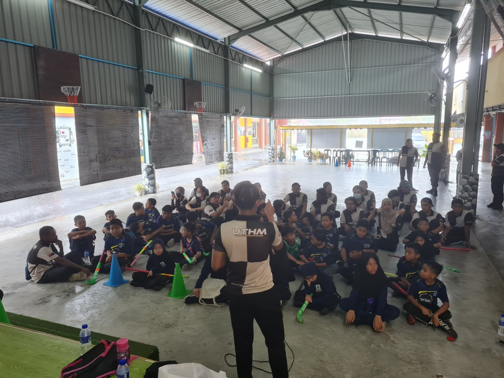
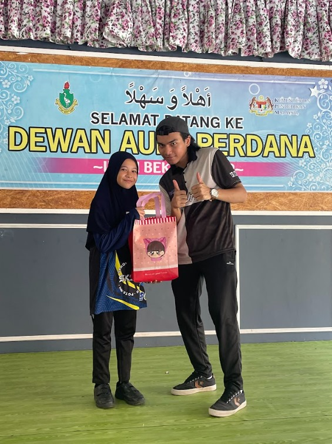
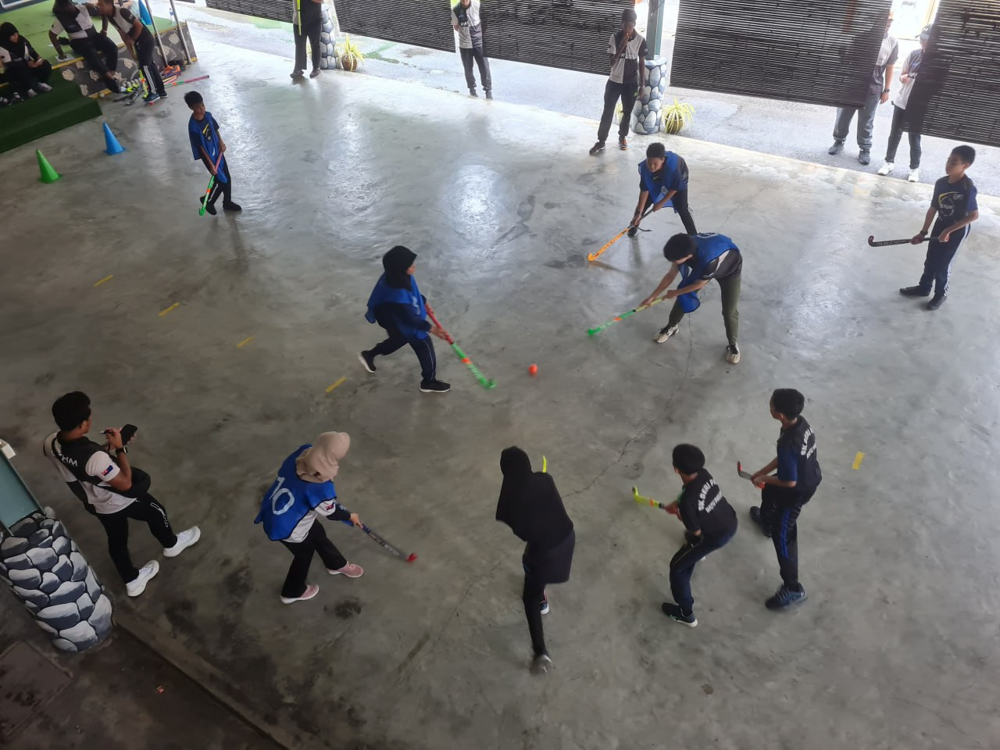

| ENERGY OF SPORTS | ||
| Being part of the 'ENERGY OF SPORTS' program at Field SK Seri Paya has been a pivotal moment in my campus life. I was thrilled to play a role in organizing this event as part of our club's initiative. We geared up to teach hockey skills to the enthusiastic primary school students, breaking them into smaller groups and guiding them through various checkpoints. The best part was orchestrating a mini hockey league where these kids showcased their newfound skills, playing a whopping 14 games that led to an epic final match. Seeing their passion for the game was truly rewarding. We wrapped up the event by honoring the winning teams with thoughtful gifts, capturing the joyous moments in group photos, and bidding heartfelt farewells to the students, which left a lasting impression on me. It was an amazing experience, showcasing the incredible power of sports to unite, inspire, and create cherished memories. | ||
|  |  |  |


MY CAMPUS LIFE